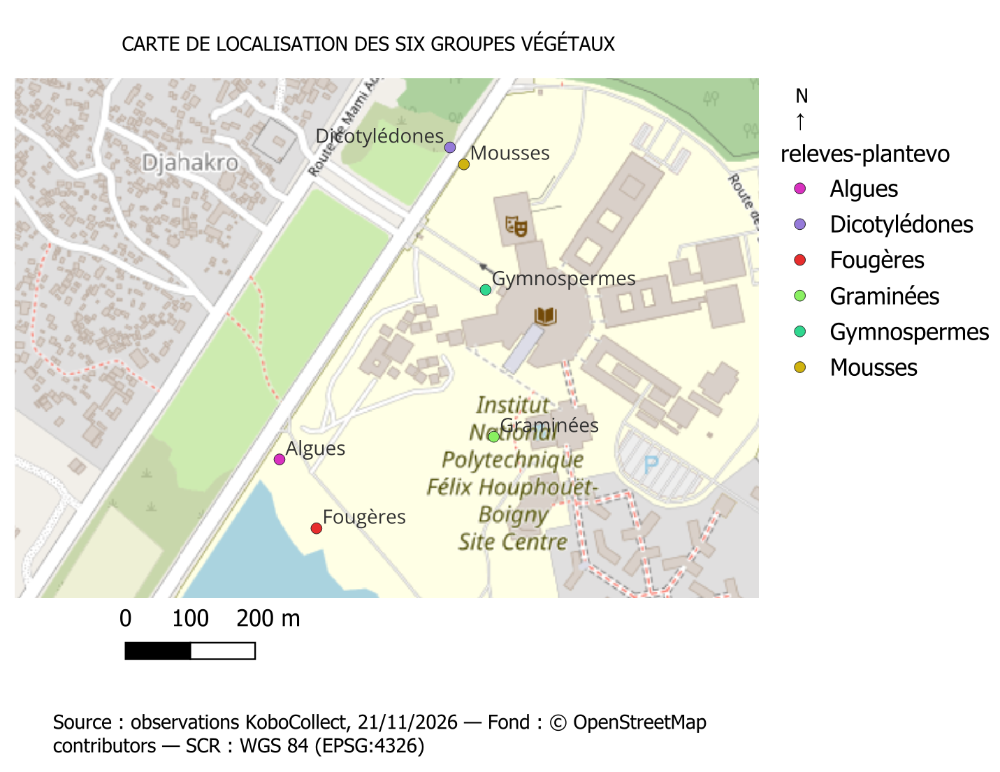

GÉOMATIQUE ET OBSERVATIONS DE TERRAIN
Notre Carte SIG
Localisation des six groupes végétaux observés à l'INP-HB de Yamoussoukro.

GÉOMATIQUE ET OBSERVATIONS DE TERRAIN
Localisation des six groupes végétaux observés à l'INP-HB de Yamoussoukro.
